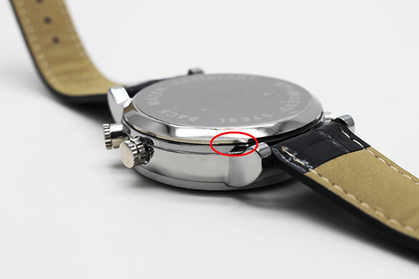
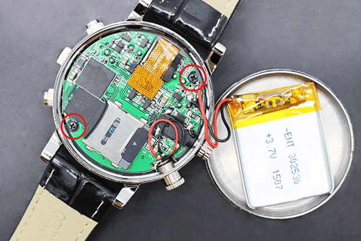
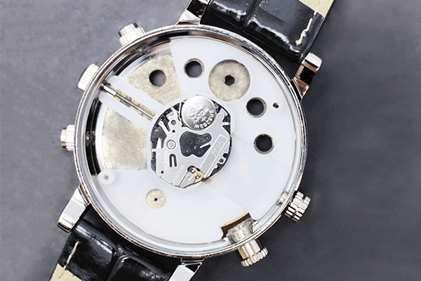
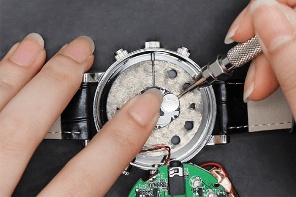
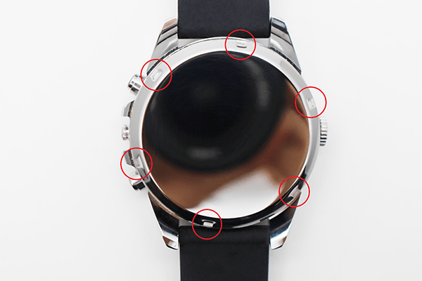
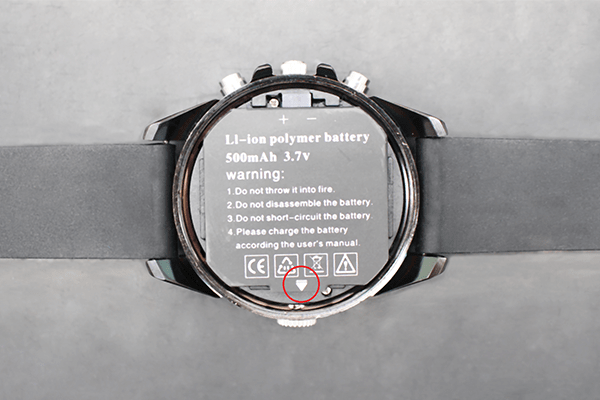
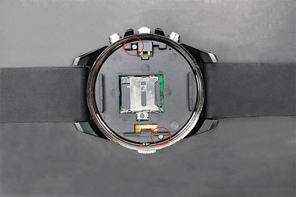
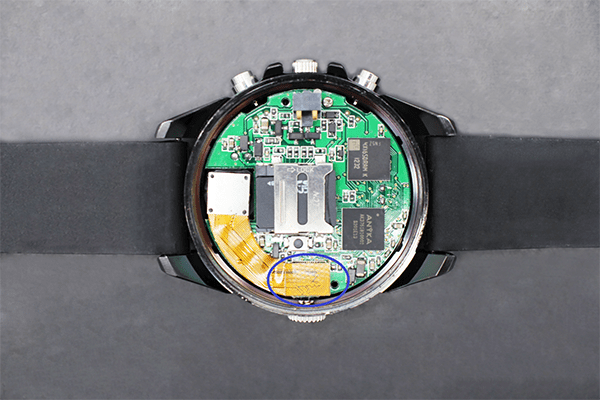
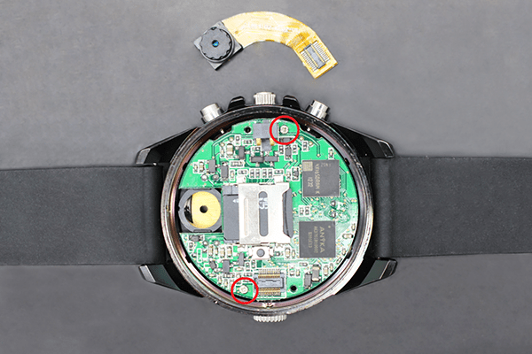

腕時計型カメラの電池交換
だんだんと寒くなって来ました！
今年はなかなか秋の行楽シーズン！というお天気が少ない不思議な気候ですね・・
皆様風邪などにはくれぐれもご注意ください！
23回目のブログでは、皆様からのお問い合わせが多かった
【腕時計型カメラの電池交換】の方法をご紹介致します！
時計の電池交換をご自身でやるのは不安ですよね・・・。
かといって時計屋さんに持っていきますと、
中にカメラがございますので驚かれてしまったり、
配線などがある為に断られてしまう可能性がございます。
（※交換対応してくださるお店も有る様です。）
通常は当店にて電池交換をさせていただいておりますが、
「商品を送る時間がない・・・」
「すぐに使いたいから自分で交換したい・・・」
というお声にお応えいたしまして、
今回は電池交換の方法を、実際の写真を交えてご説明致します！
腕時計の裏蓋のタイプは、
【はめ込み式】と【ねじ込み式（スクリューバック）】の2種類ございます。
まずは【はめ込み式】の電池交換からご説明致します！
《準備するもの》
①コジアケ ②ドライバー
③マット ④ピンセット
まずは時計の裏蓋を外します。
こじ開け口（赤◯部分）に工具（コジアケ）を差し込んで外して下さい。
力を入れすぎますと、滑って本体に傷が付く可能性がございますのでご注意下さい。

ドライバーを使用して2箇所（赤◯部分）のネジを外します。

基盤をゆっくりと持ち上げます。
※カメラレンズの接続口と配線が繋がっていますのでゆっくりと持ち上げて下さい。

一番底にある電池をピンセットを使用して取り出し、新しい電池と交換します。
電池を取り出す際には写真のように中央を抑えながら取り外してください。

電池の交換が終わりましたら、
元の通りに基盤を取り付けて裏蓋を指で押しこむように閉じて下さい。
閉じる際に中の配線を挟まないようご注意下さい。
続いて【ねじ込み式（スクリューバック）】の電池交換をご説明を致します！
《準備するもの》
①スクリューバックオープナー ②ドライバー
③マット ④ピンセット
スクリューバックオープナーを穴に合わせて回し開けます。
時計とオープナーの間にセーム革や薄い布などを挟んで回しますと、
滑りにくく本体にキズが付くのを防ぐことが出来ます。

矢印の部分を引っ掛けて上に持ち上げますとバッテリーが取り外せます。

ドライバーを使用して2箇所（赤◯部分）のネジを外します。

カメラレンズケーブルの接続部分（青◯部分）をゆっくりと外します。
ドライバーを使用して2箇所（赤◯部分）のネジを外し、基盤をゆっくりと持ち上げます。
※配線が繋がっておりますのでご注意下さい。


一番底にある電池をピンセットを使用して取り出し、新しい電池と交換します。
電池を取り出す際に地盤の針がずれてしまう可能性がございますので、
写真のように中央を抑えながら取り外してください。
電池の交換が終わりましたら、
元の通りに基盤を取り付けて裏蓋をスクリューバックオープナーで閉じて下さい。
※時計の内部にはカメラレンズの他に配線がございます。
カメラレンズの接続部分や配線が切れてしまった等で正常に動作しなくなる可能性がありますので、電池交換をする際には自己責任で行って下さい。
電池交換によって不具合が発生した場合は、保証期間内であっても修理費用が発生いたしますので予めご了承ください。
いかがでしたでしょうか・・・！
慎重に行っていただければ、初めての方でも問題なく電池交換が出来るかと思います！
「やっぱり不安だからやってほしい・・・」という方もご安心ください！
当店では電池交換もさせて頂いておりますので、メールまたはお電話でお気軽にご相談ください！
当店HPはコチラ↓↓からご覧いただけます！
【ＳＰＹ－ＯＮＬＩＮＥ－ＳＨＯＰ】
ご相談・ご質問はこちらから!!（店舗サイトのお問合せページへ飛びます）
mail：shop@spy-online.jp
tel：042-719-3319 (対応時間10：00～12：00、13：00～17：00)
今回はこの辺で…
次回更新をお楽しみに!(^^)!